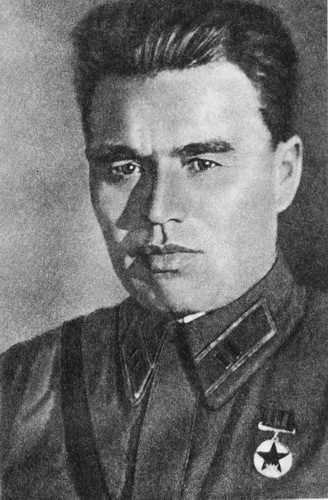

Звание: майор, командир 44-го стрелкового полка
Дата рождения: 25 января 1900 года
Дата гибели: 26 января 1979 года
Пётр Михайлович Гаврилов руководил обороной Восточного форта Брестской крепости с 22 июня по 23 июля 1941 года. Он был последним из известных защитников крепости.
Более трёх недель майор Гаврилов и его бойцы сражались без воды, продовольствия и боеприпасов. Они отбивали атаки превосходящих сил противника, использовали в качестве оружия подручные средства и продолжали бой, будучи ранеными.
23 июля 1941 года, тяжело раненный, Пётр Гаврилов был взят в плен. Даже в плену он не изменил присяге и не выдал секретов.
Удостоен звания Героя Советского Союза 17 мая 1957 года — за мужество и героизм, проявленные при защите Брестской крепости.
Имя Петра Гаврилова увековечено на мемориальных плитах Брестской крепости. Его подвиг стал символом несгибаемой воли советского солдата.